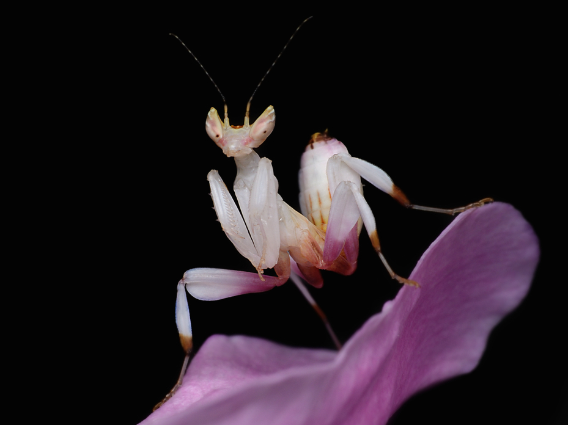

About Me
Hi, I'm Zygimantas Macijauskas. I'm a 21 year old college student currently learning how to code. I was born in Lithuania and moved to Florida 7 years later. Graduating high school I moved to Georgia which is where I reside to this day. Some of my favorite activities are; painting, playing video games, and snowboarding which I can't seem to do on the account of no snow. My favorite foods include; garlic rye bread, cow tongue and veal dumplings.
I don't have any nice picture of me saved so you'll have to do with a picture of a Orchid mantis, they may not be cute but they look cool.